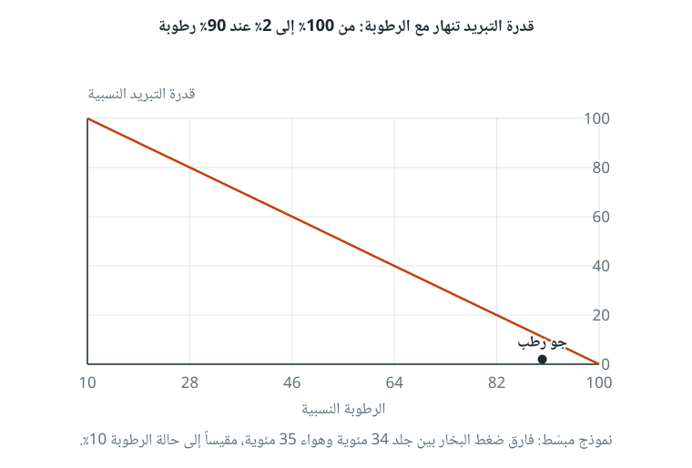

لماذا لا يبرّد التعرّق في جو رطب؟
Why sweating stops working in humid air
التبريد يأتي من تبخّر العرق لا من سيلانه: كل جرام يتبخّر يسحب نحو 2.4 كيلوجول، وفي رطوبة 90٪ يقترب الهواء من التشبّع فتتوقف العملية.
الجسم يبرد بتبخير الماء من الجلد. كل جرام ماء يتبخّر يسحب من الجسم الحرارة الكامنة وهي 2257 جول/جرام عند 100 مئوية وتقترب من 2400 عند حرارة الجلد (نحو 34 مئوية) — ولهذا تُستخدم القيمة 2.4 كيلوجول لكل جرام كتقريب عملي. المشكلة أن الهواء له سقف لما يستطيع حمله من بخار ماء، وهذا السقف يرتفع بالحرارة. في جو رطب 90٪ عند 35 مئوية يكون الهواء قريباً من سقفه، فلا يجد العرق مكاناً يتبخّر فيه فيسيل بلا تبريد يُذكر. ولهذا يشعر الإنسان بحرارة أخطر من مقياس الحرارة في الجو الرطب: المقياس يقيس الهواء، والجسم يقيس قدرته على التخلص من حمولته.
الآلية
كيف يحدث الأمر على مستوى الجسيمات أو المتغيّرات المباشرة
التبخّر يحتاج فرقاً في ضغط البخار بين سطح الجلد والهواء. كلما ارتفعت الرطوبة اقترب ضغط البخار في الهواء من ضغط التشبّع، فتقلّ سرعة التبخّر — ويقلّ التبريد بالمقدار نفسه. فوق نقطة معينة تصير الحرارة المحسوسة أعلى من حرارة الهواء الفعلية.
الأرقام والوحدات
العلاقات والوحدات والنطاقات العددية التي تسند الشرح
ضغط بخار التشبّع عند 35 مئوية نحو 5.6 كيلوباسكال. إذا كانت الرطوبة 90٪ فالهواء يحمل 5.1 كيلوباسكال، والجلد عند 34 مئوية يشبّع عند 5.3 — الفارق 0.2 كيلوباسكال فقط مقابل 3 كيلوباسكال في جو رطب 40٪. الطاقة المطلوبة لتبخير لتر واحد من العرق 2.4 ميجاجول، والتبخّر الفعّال في الجو الرطب قد ينزل إلى خُمس هذه القدرة.
الفرق الدقيق
المفهوم الملتبس الذي يُخلَط به، وأين ينفصلان
الرطوبة النسبية ليست كمية الماء في الهواء بل نسبتها إلى سقف الحرارة نفسها. لهذا تكون 40٪ عند 40 مئوية أخطر من 80٪ عند 25: السقف أعلى بكثير في الأولى، والفرق الحقيقي هو ضغط البخار المطلق. مقياس الحرارة وحده لا يكفي، ولهذا وُجد مقياس الحرارة الرطبة.
حدود التعريف
أين ينكسر التعريف أو النموذج وما الذي لا يفسّره
القيم تقريبية لهواء عند ضغط بحري وسطح جلد 34 مئوية. التهوية والريح ترفع التبخّر، والملابس تخفضه. والقدرة على التعرّق تختلف بين الأشخاص والحالات الصحية، وقد تتوقف فعلياً عند اقتراب الجسم من حدّه — وهي حالة طبية لا تُقاس بالمقياس العادي.

| الكمية | القيمة | المصدر |
|---|---|---|
| الطاقة المسحوبة لكل جرام عرق يتبخر | 2.4 kJ/g | [1] |
| ضغط بخار التشبع عند 35 مئوية | 5.6 kPa | [2] |
| الحرارة الكامنة للتبخر عند 100 مئوية | 2257 kJ/kg | [2] |
المصادر
- 1 OpenStax, College Physics 2e — Phase Change and Latent Heat — OpenStax. openstax.org/books/college-physics-2e/pages/14-3-phase-change-and-latent-heat · اطُّلع عليه 2026-11-16
- 2 OpenStax, College Physics 2e — Convection — OpenStax. openstax.org/books/college-physics-2e/pages/14-6-convection · اطُّلع عليه 2026-11-16
راجعه: مراجعة آلية — ديوان المعرفة (أرقام محسوبة + مصادر متحققة) 2026-11-16 · 2026-11-16 · آخر تحديث 2026-11-16
رجوع إلى المقالات